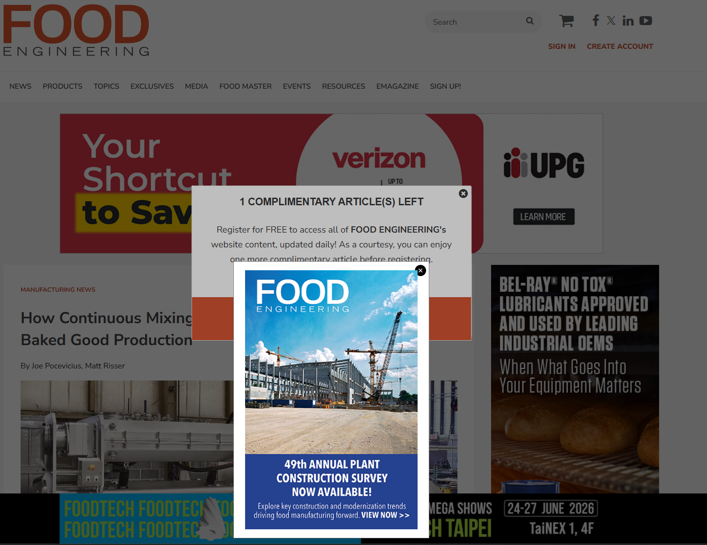
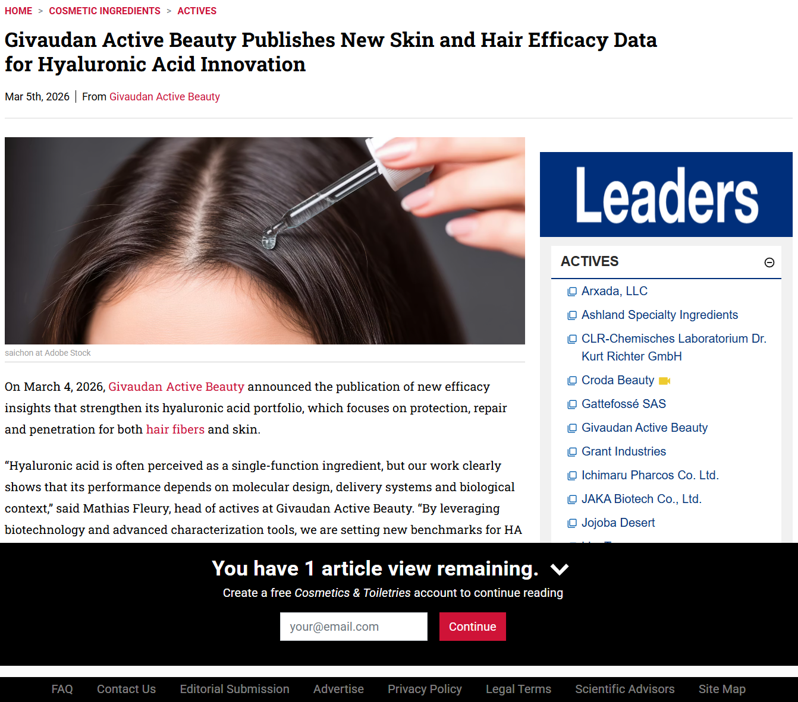
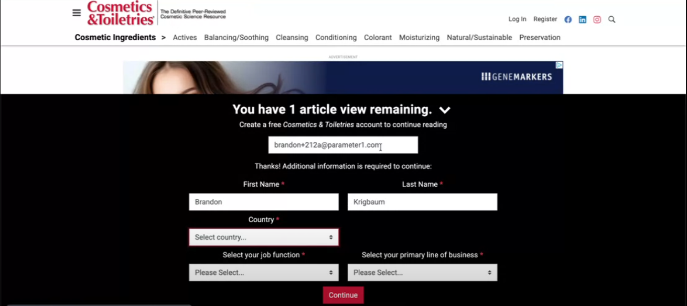
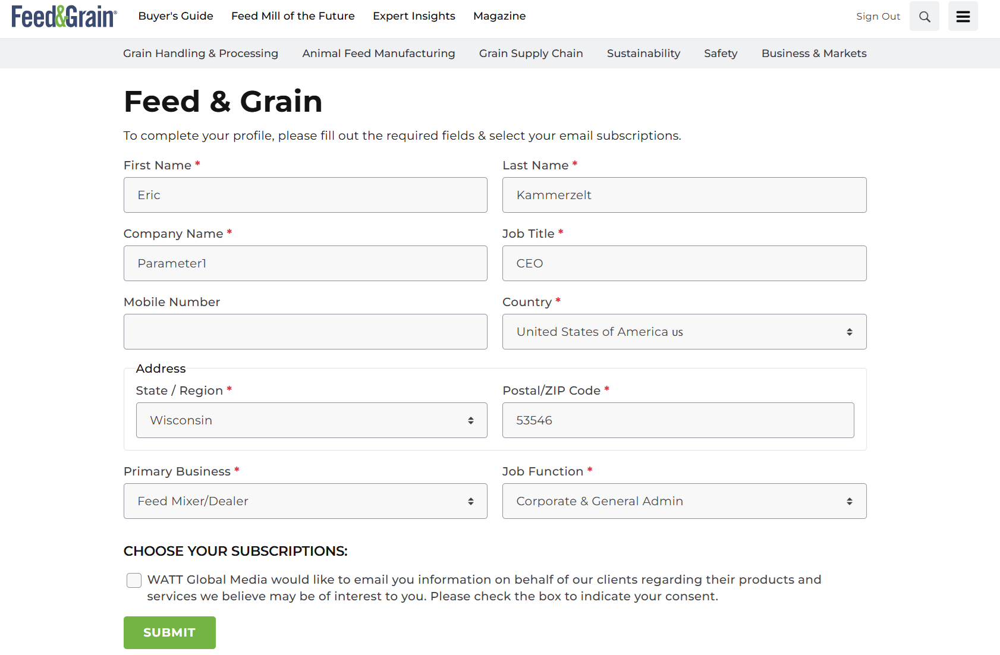
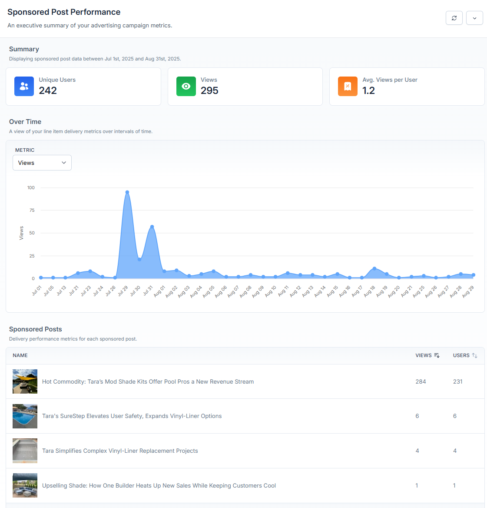
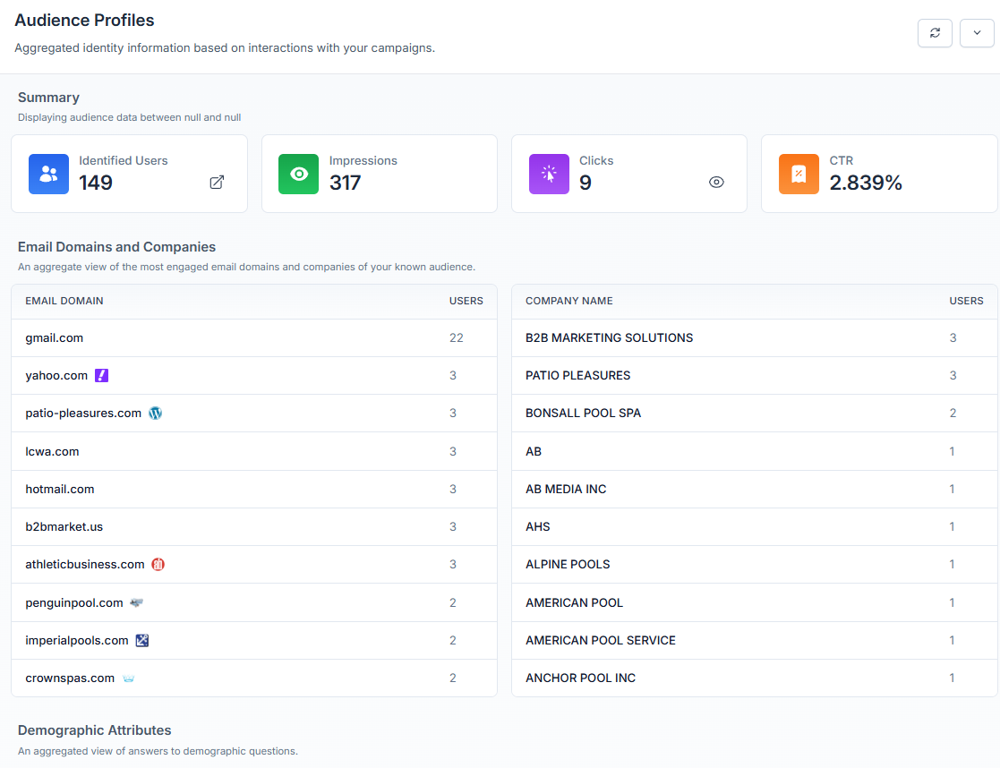
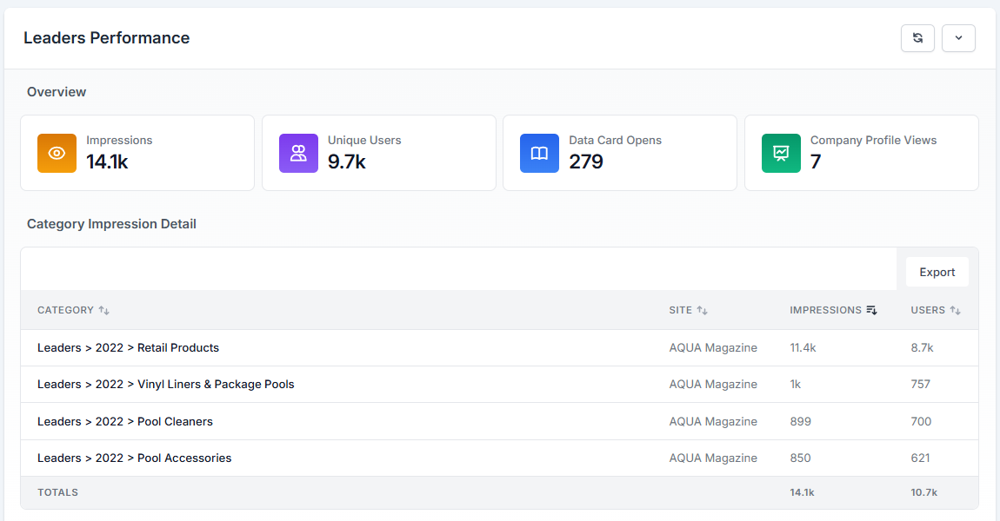

Niche Media Publisher Conference
The execution gap in audience development — and how to close it.
Eric Kammerzelt
CEO, Parameter1 / Mindful Platform
Your publishing partner. Your growth platform.
Built by publishing experts
for publishers everywhere.
20+ years in B2B publishing. Hundreds of sites launched since 2009.
We've lived the problems we solve.
Before we start...
Here's the thing: you've already done the hard work.
Years of content. Subscriber history. Event data. Advertiser relationships. It's all there.
You just can't access it because it's trapped in five different systems.
The real issue
Each gap feeds the next. Fix them in sequence.
What most publishers are running
🔀
5 tools. 5 databases. 5 versions of who your audience is.
❌ THE TYPICAL APPROACH

Popups stacked on popups. Content buried. The reader can't even see the article.
✅ WHEN YOUR SYSTEMS ARE CONNECTED

Clean. Native. Built into the content. Not bolted on top.
THE RESULT
More names.
Better data.
Better experience.
Before → After
Tools managed
[X]
separate systems
Tools managed
1
unified platform
Form completion
[X]% → [X]%
Junk data reduction
[X]%
"[WATT stakeholder quote about the impact of consolidating to one platform]"
— [Name], WATT Global Media
WATT runs [X] brands across [X] properties on Mindful — content, audience, ads, newsletters, and reporting in a single platform.
The #1 reason publishers don't gate.
And the #1 reason they should.
Mostly single-session bounces.
Landed from search. Skimmed for 3 seconds. Left.
Never going to become a reader, subscriber, or lead.
When you gate 0% → 100%
[X]%
traffic decrease
[X]x
increase in identified audience
You won't miss that traffic. Neither will your advertisers.
Most publishers use combinations. The point is to have a strategy, not to gate everything or nothing.
When gating is built into the content layer, the whole dynamic changes. It's native, not bolted on.
STEP 1: Email first — validated instantly

STEP 2: Enrich progressively over time

Anonymous → email validated → name, title, company → newsletter subscriber → fully profiled. One interaction at a time.
It's the one owned channel immune to algorithm changes, platform fees, and search volatility. And it's the most powerful mechanism for moving people up the audience ladder.
Stage 1
Anonymous
Visits site, reads content
Stage 2
Known
Validated email at gate
The pivot point
Subscriber
Newsletter opt-in =
direct, recurring access
Stage 4
Engaged
Active across content,
email, and ads
Why the newsletter is the key
How the platform makes it automatic
Known audience before
[X]%
Known audience after
[X]%
Traffic impact
[X]%
decrease
Strategy used
[Metered / Selective / Full / Combination — describe WATT's approach]
Achieved in [X] months. The traffic they lost? Single-session bounces they'll never miss.
What you're giving them
What they actually want
❌ THE OLD REPORT
| Campaign | Impressions | Clicks | CTR |
|---|---|---|---|
| Banner - Homepage | 145,200 | 312 | 0.21% |
| Banner - Section | 89,400 | 178 | 0.20% |
| Newsletter - Oct | 12,300 | 89 | 0.72% |
| Newsletter - Nov | 11,800 | 76 | 0.64% |
| Sponsored Post | 8,900 | 234 | 2.63% |
| TOTAL | 267,600 | 889 | 0.33% |
No audience identity. No cross-channel view. Just "how many," never "who."
✅ THE UNIFIED REPORT

Cross-channel. Self-service. Real-time. One report, one view.


"We reached [X] verified professionals across [X] properties. [X]% engaged with related content."
That commands premium pricing. Because you're selling access to a known, engaged audience.
Your job is to move people up this ladder. Every rung is worth more to you and your advertisers.
The DIY Approach
The Mindful Approach
As AI commoditizes content, verified audience identity becomes your moat. This makes it accessible to every team — not just the ones with data engineers.
What this looks like
Illustrative data. Your actual report reflects your real audience across all properties.
Your action plan
Audit your known audience percentage.
Pull your analytics. What percentage of last month's traffic can you identify by name and email? If you don't know the number, that's your first problem.
Visit your own site in an incognito window.
Go through the registration process as a new reader. Count the popups. Count the form fields. Then do it again as a returning user. Are you asking for data you already have?
Build one advertiser report that leads with WHO, not HOW MANY.
Before your next renewal, show titles, companies, and engagement depth — not just impressions served. If you can't build that report today, you know what needs to change.
Your challenge
Of the audience you're promising them access to, how many can you identify by name, email, and engagement level?
Schedule a conversation
Eric Kammerzelt
CEO, Parameter1
mindful.pub
Your publishing partner. Your growth platform.